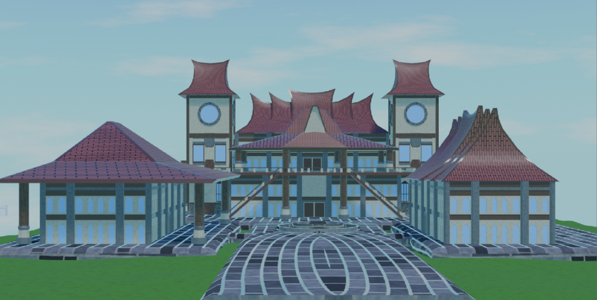

7 Kilauan Pelangi
Petualangan Zia Putri di Pandawa Akademi dimulai di sini. Bersiaplah untuk 7 kristal, 7 kesatria, dan 7 rahasia yang mengubah segalanya.
Chapter 1: Teman Sekamar & Mimpi Buruk
*Untuk suara Bahasa Indonesia terbaik, buka di Chrome Android Atau Cari Suara Indonesia
"Eh, T-Tunggu dulu aku kan bukan orang sini. Jadi aku harus tinggal dimana dong?"
"Arghh. Masa aku harus jadi gembel sih!?" Ucapku sambil panik.
Nirmala tertawa dan berkata, "Kamu tuh emang lucu ya. Ini kan asrama, jadi kamu ya pasti tinggal di sini lah."
Aku melongo, "Oh jadi ini asrama ya? Kirain teh bukan. Hah untung deh kalo gitu mah."
"Semua siswa baru diharapkan segera pergi ke asrama untuk mengambil kunci kamar.
Semua siswa bergegas pergi ke asrama. Di sana kami berbaris menunggu giliran untuk mengambil kunci.
Saat aku sampai di pintu gerbang asrama aku terbelalak melihat asrama yang besar dan mewah.

"Apa-apaan ini? Ini asrama apa kastil?!"
"Wah aku gak nyangka asramanya bakal sebesar ini," ucap Nirmala kagum.
"Hey Nirmala ayo kita segera masuk. Antriannya takut nanti nggak kebagian kamar," Ucapku sambil menarik Nirmala.
"Yah antriannya udah keburu panjang."
"Ah tenang lah, setidaknya kita bukan yang terakhir," Ucap Nirmala.
Aku bertanya pada Nirmala, "Hey Nri, ini satu orang satu kamar apa satu kamar diisi dua orang atau lebih?".
Nirmala menjawab, "Aku denger sih sekamar itu diisi dua orang. Emang kenapa?"
"Enggak, aku hanya takut kalo misal nanti aku dan teman sekamarku tidak akur."
Nirmala menepuk punggungku, "Hey ayolah, kan ada aku. Kita akan menjadi sahabat sekamar terhebat sepanjang sejarah sekolah."
"Lah emang bisa ya kita milih teman sekamar?" tanyaku.
Nirmala menjawab dengan santai. "Entahlah, tapi kita coba tanya aja dulu, siapa tau bisa"
Aku menarik napas, "Moga aja bisa deh."
Setelah beberapa saat menunggu akhirnya saatnya aku dan Nirmala mengambil kunci kamar.
"Permisi bu, apakah masih ada kamar kosong buat dua orang?" tanya Nirmala.
"Oh tentu saja nak. Ini kunci kamar nomor 168," ucap pengurus asrama.
"Loh langsung dikasih? Kirain nanti kita akan dipilihin teman sekamar."
Penjaga asrama menoleh, "Oh tentu tidak sayang. Semua orang bebas memilih teman sekamarnya asalkan jangan berbeda kelamin."
"Liat kan kita sudah jadi teman sekamar sekarang," Nirmala tersenyum.
"Wow,akugaknyangka bisa kayak gitu"
Nirmala tersenyum lalu langsung berlari, "Hey Zia ayok cepat sini!"
"Hey sabar dong, tunggu aku."
"Dia emang selalu bersemangat begini ya," ucapku di dalam hati.
Kami menyusuri lorong-lorong untuk mencari kamar kami.
Setelah beberapa lama mencari akhirnya kita menemukan kamar yang sesuai.
"Ini kan kamarnya?" tanyaku.
"Ah iya ini kamarnya. Liat nomor 168, sama kan."
Nirmala menarik tanganku, "Ayo kita masuk."
Kami berdua terbelalak melihat betapa bagusnya kamar di asrama ini. Nirmala langsung berbaring di tempat tidur.
"Hey Nir, kamu udah mau tidur? Ini kan masih sore?" kataku.
Dia tersenyum, "Ya enggak lah. Aku cuma mau istirahat sebentar dong. Cape tau dari pagi berbaris di lapangan, emang kamu enggak?"
"Cape sih, cuma kalo tidur jam segini takutnya nanti tengah malam aku kebangun dan nggak bisa tidur lagi."
"Ya jangan tidur lah, berbaring aja rilek dikit."
Aku menarik napas, "Nanti aja deh. Toh aku harus membereskan kamar ini dulu sedikit biar tidak terlalu berdebu."
"Kamu mau membantuku tidak?" Saat aku menengok ternyata Nirmala sudah tidur pulas.
Aku melongo, "Hah katanya dia cuma mau tiduran, eh ternyata tidur beneran."
Aku beres-beres kamar sebentar. Setelah beres membersihkan kamar aku mulai merasa kelelahan. Aku langsung tersungkur ke kasur lalu tanpa sadar sudah tertidur pulas.
Di dalam mimpi aku mendengar suara. Suara itu menggema. Suaranya seperti sedang memanggilku.
"Temukan 7 kristal pelangi. Selamatkan kerajaan Hastinapura dari kekeringan dan bongkar rencana busuk mereka."
"Tunggu siapa kamu? Hey apa yang kamu maksud?"
"Angin akan selalu menuntutmu untuk memenuhi takdirmu, Zia Putri."
Sebelum aku mendapatkan penjelasan dari suara itu, aku terbangun dari mimpiku. Aku melihat jam, ternyata ini tengah malam.
Aku melongo melihat Nirmala masih tidur pulas padahal dia tidurnya jam 3 sore.
"Aduh mules banget. Hey Nir-Nirmala temenin aku ke kamar mandi dong, ayo," aku mencoba membangun Nirmala.
"Mmm... sate kambing... nambah dong, Bang... dua tusuk lagi," ucap Nirmala sambil mengigau.
"Hah ini orang kalo udah tidur susah banget ya buat dibangunin."
Karena Nirmala tidak kunjung bangun, aku terpaksa pergi ke WC sendirian. Melewati koridor asrama yang gelap dan sunyi. Saat berjalan aku merasa ada sesuatu yang mengintaiku. Samar-samar aku melihat bayangan gelap berseliweran di lorong.
"Hey kau yang di sana, menunduk!" Suaranya lantang dan tegas.
Siapa yang teriak? Bayangan apa yang ngintai Zia? Lanjut Chapter 2 biar nggak penasaran 👇
Traktir Kopi Biar Lanjut ☕